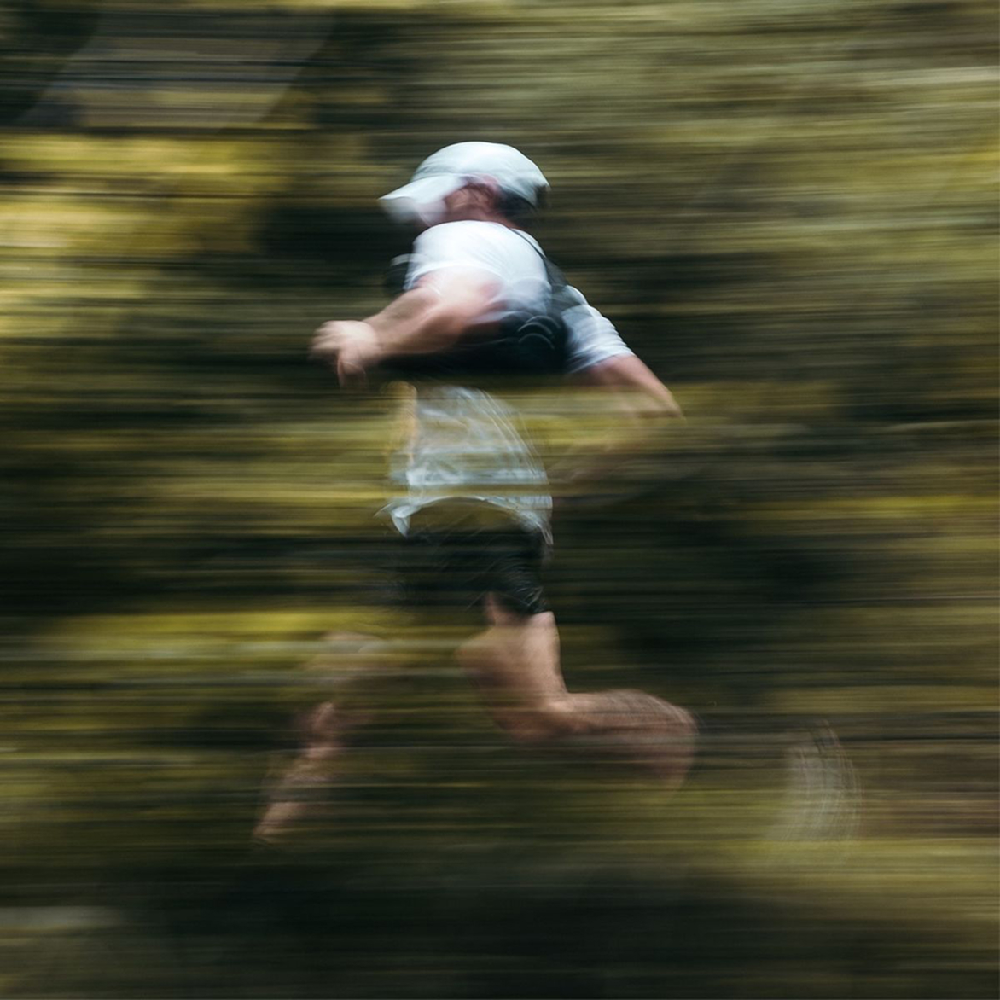

22 Août 2026
TRAIL
DES
AWIRS
Un trail accessible et authentique au cœur des sentiers vallonnés et techniques des Awirs. Trois parcours, une ambiance chaleureuse, bar et barbecue pour finir.
Les parcours
3 PARCOURS
POUR TOUS
Un tracé simple et accessible, ouvert à tous y compris aux marcheurs et participants accompagnés de leur chien. Esprit convivial et familial.
Un parcours vallonné avec un dénivelé marqué et quelques passages techniques. Idéal pour vivre une vraie expérience trail sur une distance stimulante.
Un tracé long, technique et exigeant au cœur des reliefs des Awirs. Pour les coureurs en quête de dépassement sur des sentiers engagés et variés.
Programme de la journée
HORAIRES
des inscriptions
21 km
12 km & 6 km
des prix
L'ORGANISATION
INKIPIT

Bastian, Sébastien, Nicolas et Guillaume — quatre passionnés de trail qui ont décidé de faire découvrir les Awirs comme terrain de jeu. Une première édition lancée avec le cœur.
Rejoins l'aventure
PRÊT·E
À COURIR ?
Les inscriptions sont gérées par O'top Services. Pré-inscris-toi en ligne ou directement sur place dès 13h le jour de l'événement.